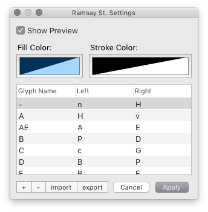

A RoboFont extension to display similarly-shaped glyphs to the left & right of the glyph being edited.
Once installed, RamsayStreet will become available from the Extensions menu.
Use the menu to open the Settings window:

.ramsaySt file.Neighbours, Everybody needs good neighbours
With a little understanding
You can find the perfect blend
Neighbours...should be there for one another
That's when good neighbours become good friends
Ooh Neighbours, should be there for one another
That's when good neighbours become good friends.